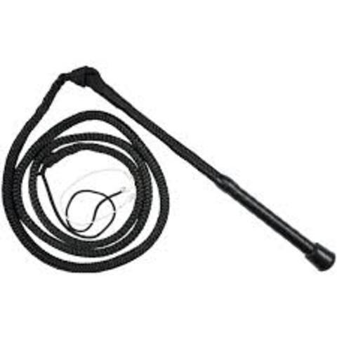

- Miecze
- Obuchowe
- Drzewcowe
- Wyróżnione
- Bibliografia
Miecze proste krótkie
Miecze Proste krótkie to takie proste zwykłe bronie ostre które pokazują się w wielu różnych rozmiarach i wersjach. Jeżeli ma ostrze z dwóch stron, chwyt mieści się w dłoni i wygląda w miare prosto to jest to miecz krótki prosty.
Atuty mieczy krótkich:
- Różnorodne
- zwinne
- wysoki górny próg umiejętności
- praktyczne poza bitwą
- Różnorodne
- zwinne
- wysoki górny próg umiejętności
- praktyczne poza bitwą
Miecze proste długie
Miecze proste długie to bardziej złożone, większe i często efektywniejsze wersje mieczy krótkich. Miecze długie to są takie ostrza które wymagają do efektywnego władania nie jednej, a dwóch rąk. Są one również z reguły cięższe od mieczy krótkichi często przekraczają wagę 5kg.- Silne
- większa efektywność technik przeciw pancerzom
- przerażające
- wygladaja fantastycznie
Miecze zakrzywione
Do mieczy zakrzywionych należą z reguły jednostronne ostrza posiadające zakrzywienie w celu polepszenia efektywności cięcia.Istnieje wiele rodzajów mieczy zakrzywionych, lecz moim ulubionym są szable.- bardzo dobre cięcie
- stylowe
- symbol statusu
- można otworzyć szampana
Rapiery
Rapiery to są bardzo cienkie i wydłużone dwustronne miecze z obszerną osłoną dłoni bardziej przeznaczone do wykonywania pchnięć, lecz nadal zdolne i wydajne w cięciu.Ich lekkość, zasięg i mniemanja elegancja sprawiła że zostały one najczęstszym powodem śmierci europejskiej arystokracji w niektórych czasach 18 i 19 wieku, dopóki pojedynki nimi nie zostały zakazane.- precyzja
- zasięg
- symbol statusu
- eleganckie
- niesamowita efektywność w pojedynkach
Miecze egzotyczne
Istnieje mnóstwo różnych mieczy egzotycznych i każde rządzą się własnymi zasadami i mają swoje własne atuty i zalety. Pokazany na zdjęciu khopesh jest typem miecza używanym w czasach staróżytnego egiptu. W działaniu przypominały one topory, i cięły one z podobną efektywnością, lecz łatwo łamały się i wyginały przy próbach dźgania.
- khopesh
- katana
- flamberge
- cinquedea
- i wiele innych
Morgensztern
Morgensztern jest jednoręczną maczugą obdarzoną licznymi kolcami przymocowanymi wokół jej metalowej głowicy. Jest bardzo wydajną bronią obuchową, nawet przeciwko ciężko uzbrojonym wrogom, co sparwiło że kiedy pojawił się on na polach walki w późnym średniowieczu, dotychczasowy wyścig zbrojeń na płaszczyźnie pancerza został gwałtownie zachamowany. Nazwa "Morgensztern" pochodzi z niemieckiego słowa oznaczającego "poranna gwiazda" osnoszace się do wyglądu broni.
- penetracja pancerza
- obrażenia niezależnie od ochrony
- łatwość użytkowania
Buława
Buławy są starożytnym typem broni, używanym od tysiącleci. Są bardzo proste w obsłudze i budowie, i z tego powodu bardzo często używane przez antyczne i średniowieczne armie. Bogato zdobione Kuliste buławy miały dodatkowe znaczenie jako symbol władzy i autorytetu, np. buławy królewskie lub buławy hetmańskie w rzeczypospolitej obojga narodów- prosta budowa
- wielofunkcyjność
- obrażenia przez zbroję
- znaczenie symboliczne
Pałki
Pałki sa prawdopodobnie drugą najstarszą bronią w historii ludzkości, tuż za trzymanymi w dłoniach kamieniami. w zxależności od rozmiaru i trwałości broni, efektywność pałki różni się znacznie z egzeplarza do egzemplarza, lecz podłużny kij wykonany z drewna jest bardzo dobrą opcją w wielu sytuacjach w i poza bitwą.- najprostsza możliwa budowa
- możliwość dostosowania do potrzeb
- niskie wymagania umiejętnościowe i wysoki sufit umiejętności
- praktyczne poza walką
Młoty
Młoty występowały w 3 głównych rozmiarach: Krótkim jednoręcznym, dwuręcznym, i pośrednim półtoraręcznym. Głowice młotów różniły się często zakończeniami; mogły być płaskie, okrągłe, wielokoątne, ostre - nazywane nadziakami, hakowate lub toporowe, a niektóre młoty łączyły w sobie 2 różne zakończenia - tak jak ten przedstawiony na zdjęciu,.- łatwość użycia
- możliwość dostosowania do potrzeb
- duża siła uderzenia
- penetracja pancerza w przypadku nadziaków
Halabarda
Halabardy są jednymi z najbardziej popularnych broni średniowiecza. Składają się z podłużnego drzewca często sięgającego nawet 2 metry lub więcej i głowicy tradycyjnie złożonej z haka z tyłu, topora z przodu i włóczni na czubie. Halabardy BYły powszechnie używane prze gwardie miast w całej europie ze względu na swoje unikalne charakterystyki i możliwość wykorzystania ich w celu kontroli pożarów.- użyteczność poza bitwą
- możliwość dostosowania do potrzeb
- najlepszy wybór na broń dla gwardii miejskiej
- duży zasięg
Pika
Piki to bronie drzewcowe uzywane głównie w epoce noworzytnej w celu obrony przed kawalerią i fortyfikowania pozycji i taborów. Pika jest zbudowana z ostrej głowicy umieszczonej na bardzo długim kiju osiągającym często ponad 5m długości. U shyłku 17 wieku oddziały zbudowane z muszkieterów wspomaganych pikinierami były dominującym sposobem prowadzenia bitew aż do wystarczającego rozwoju broni palnej około połowy 18 wieku.- bardzo efektywne przeciw kawalerii
- wysmienite narzędzie defensywne
- najlepszy zasięg wśród broni białej
- mały koszt produkcji
Włócznie
Włócznie można zdefiniować jako podłużny drzewiec z naostrzonym punktem na jednej ze stron. W takiej formie włócznie były używane od najwcześniejszych łowców w prehistorii i utrzymały swoją dominację jako czołowa broń ludzkości aż do późnego antyku.- dobra obrona
- najlepszy wybór czasów antycznych
- bardzo dobry zasięg
- bardzo prosta budowa i obsługa
Kopia
Kopia jest jednoręczną bronią konną bardzo często jednorazową używaną tylko do pierwszej szarży w bitwie i odrzucaną na bok po szarży. Kopie były wśród podstawowego uzbrojenia wielu jednostek jazdy cięzkiej i służyła do przełamania się przez wstępne linie obrony używając jej ogromnego zasięgu (nawet 4 do 5 metrów) i impetu szarzy całego kawalerzysty.- przebijanie formacji obronnych
- pozwala na przeprowadzenie wtórnych szarż
- bardzo dobry zasięg
Bicz
Pomimo swojej niepozornej budowy, bicz jest bardzo dobrą bronią w odpowiednich rękach. Biegły użytkownik bicza jest w stanie obezwładnić lub dotkliwie zranić przeciwnika, lecz jest on prawie bezużyteczny przeciwko opancerzonym wrogom.

Atuty bicza:- stylowy
- kompaktowo przechowywane
-wszechstronne zastosowania
Wykorzystane źródła
- moja głowa